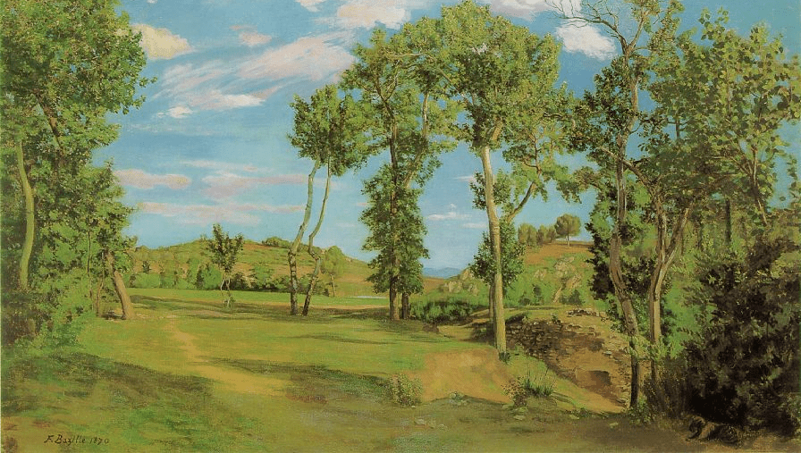
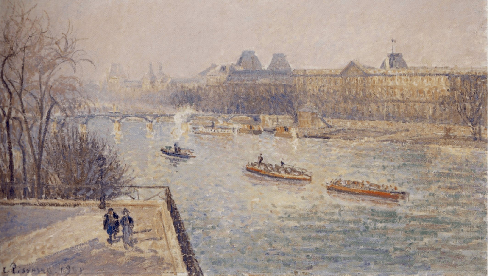

Proyectos

Paysage au board du Lez (1870)
Frédéric Bazille

Bridge at Villeneuve-la-Garenne (1872)
Alfred Sisley

Paris Street; Rainy Day (1877)
Gustave Caillebotte

A Bar at the Folies-Bergère (1882)
Édouard Manet

Still Life, Drapery, Pitcher, and Fruit Bowl (1893)
Paul Cézanne

Morning, Winter Sunshine, Frost, the Pont-Neuf, the Seine, the Louvre, Soleil D'hiver Gella Blanc (1901)
Camille Pissarro